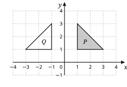
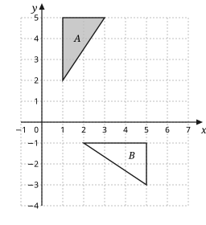
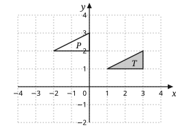

<script src="/assets/redirect.js"></script>
<section class="theory" data-section="IGCSE-23.1">
<h2>23.1 Simple plane transformations</h2>
<p class="src">Based on Cambridge IGCSE Mathematics Core and Extended Coursebook (Karen Morrison and Nick Hamshaw), Chapter 23 Transformations and vectors, printed pp.783–800. Own wording and new numbers, following the coursebook descriptions of reflections, rotations, translations and enlargements and the information needed to describe each one fully.</p>
<p class="key-words"><strong>Key words:</strong> <em>reflection</em>, <em>rotation</em>, <em>translation</em>, <em>enlargement</em>, <em>scale factor</em>, <em>centre of enlargement</em></p>
<h3>Four transformations</h3>
<p>A transformation moves a shape, called the object, to a new position, called the image. When you are asked to describe a single transformation fully, give its name and all the details listed below.</p>
<table class="plain"><tr><th>Transformation</th><th>Describe fully by giving</th></tr><tr><td>Reflection</td><td>the equation of the mirror line</td></tr><tr><td>Rotation</td><td>the centre, the angle and the direction</td></tr><tr><td>Translation</td><td>the column vector</td></tr><tr><td>Enlargement</td><td>the centre and the scale factor</td></tr></table>
<h3>Reflection, rotation and translation</h3>
<p>In a <strong>reflection</strong> each point of the image is the same distance from the mirror line as the object point, on the other side. Mirror lines are often \(x=c\), \(y=c\), \(y=x\) or \(y=-x\).</p>
<p>A <strong>rotation</strong> turns the shape about a fixed point, the centre. Angles are usually \(90^\circ\) or \(180^\circ\), clockwise or anticlockwise. About the origin, \(90^\circ\) anticlockwise maps \((x, y)\) to \((-y, x)\), and \(180^\circ\) maps \((x, y)\) to \((-x, -y)\).</p>
<p>A <strong>translation</strong> slides every point the same distance in the same direction. The column vector \(\begin{pmatrix}a\\b\end{pmatrix}\) means \(a\) units right and \(b\) units up; negative values mean left or down.</p>
<p>After a reflection, a rotation or a translation the image is congruent to the object.</p>
<h3>Enlargement</h3>
<p>An <strong>enlargement</strong> changes the size of a shape. Every length is multiplied by the <strong>scale factor</strong> \(k\), and the position is fixed by the <strong>centre of enlargement</strong>: the distance from the centre to each image point is \(k\) times the distance from the centre to the object point. To find the centre, join corresponding vertices of the object and image with straight lines and extend them until they meet.</p>
<div class="worked-example">
<h4>Worked example 1: Describing a reflection</h4>
<p class="src">Coursebook, 23.1, describing a transformation fully. New numbers.</p>
<p>Triangle \(P\) has vertices \((1, 1)\), \((3, 1)\) and \((1, 3)\). Triangle \(Q\) has vertices \((-1, 1)\), \((-3, 1)\) and \((-1, 3)\). Describe fully the single transformation that maps \(P\) onto \(Q\).</p><p></p>
<ol class="steps">
<li>Each vertex keeps its \(y\)-coordinate and its \(x\)-coordinate changes sign, so the shape is flipped: reflection <span class="mark">B1</span></li>
<li>Mirror line \(x=0\) (the \(y\)-axis) <span class="mark">B1</span></li>
</ol>
<p class="final"><strong>Answer:</strong> Reflection in the line \(x=0\)</p>
</div>
<div class="worked-example">
<h4>Worked example 2: Drawing an enlargement</h4>
<p class="src">Coursebook, 23.1, enlargement from a centre. New numbers.</p>
<p>Triangle \(R\) has vertices \((1, 2)\), \((2, 2)\) and \((1, 4)\). Find the vertices of its image after an enlargement, scale factor 2, centre \((0, 1)\).</p>
<ol class="steps">
<li>From the centre: \(\begin{pmatrix}1\\1\end{pmatrix}\), \(\begin{pmatrix}2\\1\end{pmatrix}\), \(\begin{pmatrix}1\\3\end{pmatrix}\) <span class="mark">M1</span></li>
<li>Multiply by 2: \(\begin{pmatrix}2\\2\end{pmatrix}\), \(\begin{pmatrix}4\\2\end{pmatrix}\), \(\begin{pmatrix}2\\6\end{pmatrix}\) <span class="mark">M1</span></li>
<li>Add to the centre: \((2, 3)\), \((4, 3)\), \((2, 7)\) <span class="mark">A1</span></li>
</ol>
<p class="final"><strong>Answer:</strong> \((2, 3)\), \((4, 3)\), \((2, 7)\)</p>
</div>
<h3>Common mistakes</h3>
<ul><li>Giving two transformations when one single transformation is asked for.</li><li>Leaving out a detail, such as the direction of a rotation or the centre of an enlargement.</li><li>Writing a translation as coordinates instead of a column vector.</li></ul>
<h3>Past paper</h3>
<p class="src">0580/23/M/J/23 Q8, official QP and official MS.</p>
<p></p><p>Describe fully the single transformation that maps triangle \(A\) onto triangle \(B\). [3]</p>
<details><summary>Mark scheme</summary>
<ol class="steps">
<li>Rotation <span class="mark">B1</span> Official MS: Rotation, B1.</li>
<li>Centre \((0, 0)\) <span class="mark">B1</span> Official MS: (0, 0) oe, B1.</li>
<li>\(90^\circ\) clockwise <span class="mark">B1</span> Official MS: 90° clockwise oe, B1.</li>
</ol>
</details>
<h3>Past paper</h3>
<p class="src">0580/21/O/N/25 Q5, official QP and official MS.</p>
<p></p><p>(a) Describe fully the single transformation that maps triangle \(T\) onto triangle \(P\). [2]</p><p>(b) Draw the image of triangle \(T\) after an enlargement of scale factor 2, centre \((3, 3)\). [2]</p>
<details><summary>Mark scheme</summary>
<ol class="steps">
<li>(a) Translation <span class="mark">B1</span> Official MS: Translation, B1.</li>
<li>(a) \(\begin{pmatrix}-3\\1\end{pmatrix}\) <span class="mark">B1</span> Official MS: column vector (−3, 1), B1.</li>
<li>(b) Image the correct size and the correct way round <span class="mark">B1</span> Official MS: 2 marks for the triangle at (3, 1), (3, −1), (−1, −1); B1 for correct size and orientation but wrong position.</li>
<li>(b) Image at \((3, 1)\), \((3, -1)\), \((-1, -1)\) <span class="mark">B1</span> Official MS: triangle at (3, 1), (3, −1), (−1, −1), both marks.</li>
</ol>
</details>
<div class="quick-check">
<h4>Quick check 1</h4>
<p>The point \(P(5, 4)\) is reflected in the line \(x=2\). Find the \(x\)-coordinate of the image of \(P\).</p>
<details><summary>Worked solution</summary>
<ol class="steps"><li>\(P\) is 3 units to the right of \(x=2\).</li><li>The image is 3 units to the left.</li></ol>
<p class="final"><strong>Answer:</strong> \(-1\)</p>
</details>
</div>
<div class="quick-check">
<h4>Quick check 2</h4>
<p>The point \(P(3, 3)\) is enlarged with scale factor 3 and centre \((1, 0)\). Find the \(x\)-coordinate of the image of \(P\).</p>
<details><summary>Worked solution</summary>
<ol class="steps"><li>From the centre to \(P\) is \(\begin{pmatrix}2\\3\end{pmatrix}\).</li><li>Times 3: \(\begin{pmatrix}6\\9\end{pmatrix}\), so \(x=1+6\).</li></ol>
<p class="final"><strong>Answer:</strong> \(7\)</p>
</details>
</div>
<div class="quick-check">
<h4>Quick check 3</h4>
<p>The point \(P(4, 2)\) is rotated \(90^\circ\) anticlockwise about the origin. Find the \(x\)-coordinate of the image of \(P\).</p>
<details><summary>Worked solution</summary>
<ol class="steps"><li>\((x, y)\) maps to \((-y, x)\), so the image is \((-2, 4)\).</li></ol>
<p class="final"><strong>Answer:</strong> \(-2\)</p>
</details>
</div>
</section>
